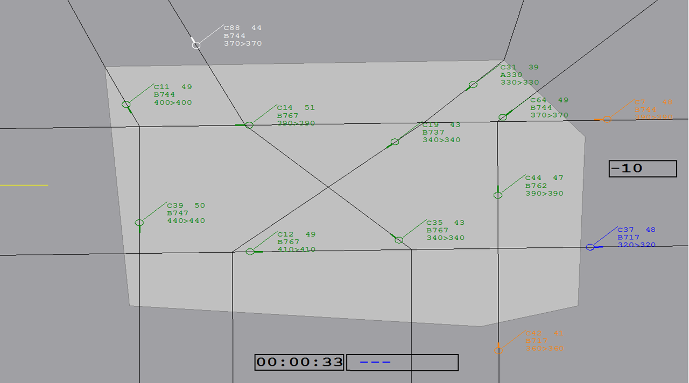
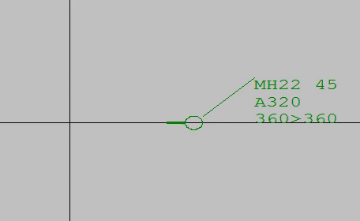

1. The Sector Display
The light grey polygon in the image below is your flight control sector. You are responsible for aircraft entering this area, leaving this area, and flying within this area. The dark grey zone represents areas outside of your control. The black lines are the flight paths which aircraft will travel on. Aircraft will only travel on these pre-designated paths.
In the bottom of the screen is a timer. Scenarios go for 5 minutes each. The number on the right of the screen (currently -10) shows how many points you have. You are awarded points for successfully completing objectives, and points are deducted for failing objectives.

2. Identifying Aircraft
The image below shows an example aircraft. Aircraft are represented as coloured circles with a line. The line tells you what direction the aircraft is travelling in. We will tell you more about colour soon.
Aircraft have an information box. The first bit of text (from top left) is the
name of the aircraft, e.g. MH22.
Next to this, you have the speed of the aircraft in knots, e.g.
450. Under this is the type of aircraft,
e.g. A320.
The text at the bottom relates to aircraft altitude and has three parts:
Example 2. The aircraft starts at 36,000 ft. Then it starts climbing to 37,00 ft. Note, when the aircraft is not changing altitude, both numbers are the same and seperated by a (>), whilst when it is changing altitude, the numbers are different and seperated by a (^).
